第 17 章
轮廓的特征
本章共 9 个小节 · 宽高比 · 极点 · Extent · Solidity · 等效直径 · 遮罩 · 最小值最大值 · 均值标准差 · 方向
这一章介绍找到轮廓后，能够进一步计算的常用特征。前一章已经说明如何取得轮廓、外接矩形、凸包、拟合椭圆等资料，本章继续使用这些结果，说明如何计算宽高比、轮廓极点、轮廓面积比例、像素坐标资讯、影像像素统计，以及方向角等资讯。
共用流程
多数范例都会先读取影像、转灰阶、二值化，再用 findContours() 取得轮廓。代码中的图片名与原书保持一致，例如 explode1.jpg、hand.jpg、forest.png。
17-1
宽高比（Aspect Ratio）
在 16-1-1 节说明过，使用 boundingRect() 函数可以将影像内的轮廓使用矩形框起来，同时回传值的元组格式是 (x, y, w, h)，将 w（width）除以 h（height）就可以得到轮廓的宽高比。
宽高比 = w(width) / h(height)
程序实例 ch17_1.py：重新设计 ch16_2.py，列出轮廓的宽高比。
# ch17_1.py
import cv2
src = cv2.imread("explode1.jpg")
cv2.imshow("src", src)
src_gray = cv2.cvtColor(src, cv2.COLOR_BGR2GRAY)
ret, dst_binary = cv2.threshold(src_gray, 127, 255, cv2.THRESH_BINARY)
contours, hierarchy = cv2.findContours(
dst_binary,
cv2.RETR_LIST,
cv2.CHAIN_APPROX_SIMPLE
)
x, y, w, h = cv2.boundingRect(contours[0])
dst = cv2.rectangle(src, (x, y), (x + w, y + h), (0, 255, 255), 2)
cv2.imshow("dst", dst)
aspectratio = w / h
print(f"宽高比 = {aspectratio}")
cv2.waitKey(0)
cv2.destroyAllWindows()
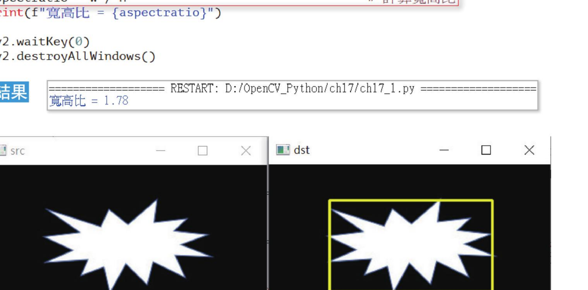
参考原书第 17-2 页，显示 explode1.jpg 的外接矩形与宽高比输出。
17-2
轮廓的极点
17-2-1 认识轮廓点坐标
所谓轮廓的极点是指最上方点、最下方点、最左端点和最右端点。在 15-1-1 节曾经说明，使用 findContours() 函数后，所回传的 contours 其实就是轮廓点坐标资讯的阵列。
程序实例 ch17_2.py：认识轮廓点坐标的资料格式。
# ch17_2.py
import cv2
src = cv2.imread("explode1.jpg")
cv2.imshow("src", src)
src_gray = cv2.cvtColor(src, cv2.COLOR_BGR2GRAY)
ret, dst_binary = cv2.threshold(src_gray, 127, 255, cv2.THRESH_BINARY)
contours, hierarchy = cv2.findContours(
dst_binary,
cv2.RETR_LIST,
cv2.CHAIN_APPROX_SIMPLE
)
cnt = contours[0]
print(f"资料格式 = {type(cnt)}")
print(f"资料维度 = {cnt.ndim}")
print(f"资料长度 = {len(cnt)}")
for i in range(3):
print(cnt[i])
cv2.waitKey(0)
cv2.destroyAllWindows()
资料格式 = <class 'numpy.ndarray'>
资料维度 = 3
资料长度 = 88
[[186 39]]
[[181 44]]
[[180 44]]
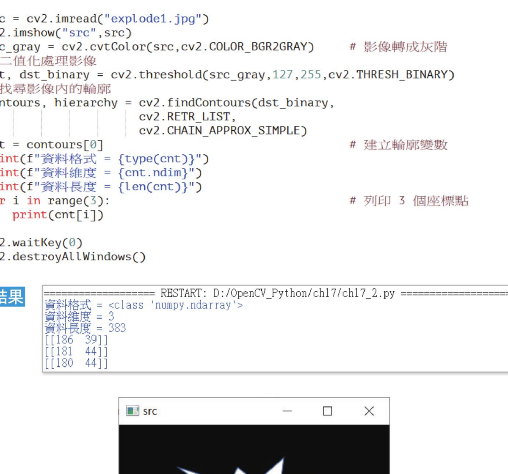
参考原书第 17-3 页，可看到轮廓点资料是三维阵列。
17-2-2 Numpy 模组的 argmax() 和 argmin() 函数
Numpy 模组的 argmax() 函数可以回传阵列的最大值索引，argmin() 函数可以回传阵列的最小值索引。
max_i = np.argmax(data)
min_i = np.argmin(data)
程序实例 ch17_3.py：从简单阵列认识 argmax() 和 argmin() 的用法。
# ch17_3.py
import numpy as np
data = np.array([3, 9, 8, 5, 2])
print(f"data = {data}")
max_i = np.argmax(data)
print(f"最大值索引 = {max_i}")
print(f"最大值 = {data[max_i]}")
min_i = np.argmin(data)
print(f"最小值索引 = {min_i}")
print(f"最小值 = {data[min_i]}")
data = [3 9 8 5 2]
最大值索引 = 1
最大值 = 9
最小值索引 = 4
最小值 = 2
程序实例 ch17_4.py：使用物件导向方式呼叫 argmax() 和 argmin()。
# ch17_4.py
import numpy as np
data = np.array([3, 9, 8, 5, 2])
print(f"data = {data}")
max_i = data.argmax()
print(f"最大值索引 = {max_i}")
print(f"最大值 = {data[max_i]}")
min_i = data.argmin()
print(f"最小值索引 = {min_i}")
print(f"最小值 = {data[min_i]}")
程序实例 ch17_5.py：将 argmax() 函数应用在二维阵列。
# ch17_5.py
import numpy as np
data = np.array([[3, 9],
[8, 5],
[2, 3]])
print(f"data = {data}")
max_i = data[:, 0].argmax()
print(f"最大值索引 = {max_i}")
print(f"最大值 = {data[max_i][0]}")
print(f"最大值点 = {data[max_i]}")
max_val = tuple(data[data[:, 0].argmax()])
print(f"最大值点 = {max_val}")
程序实例 ch17_6.py：使用 ch17_2.py 的前三笔轮廓资料，将本节观念扩充到三维阵列。
# ch17_6.py
import numpy as np
data = np.array([[[186, 39]],
[[181, 44]],
[[180, 44]]])
print(f"原始资料data = \n{data}")
n = len(data)
print(f"原始阵列的资料笔数 = {n}")
for i in range(n):
print(data[i])
print(f"资料维度 = {data.ndim}")
max_i = data[:, :, 0].argmax()
print(f"x 最大值索引 = {max_i}")
print(f"x 最大值 = {data[:, :, 0].max()}")
print(f"tuple(data[data[:, :, 0].argmax()][0]) = {tuple(data[data[:, :, 0].argmax()][0])}")
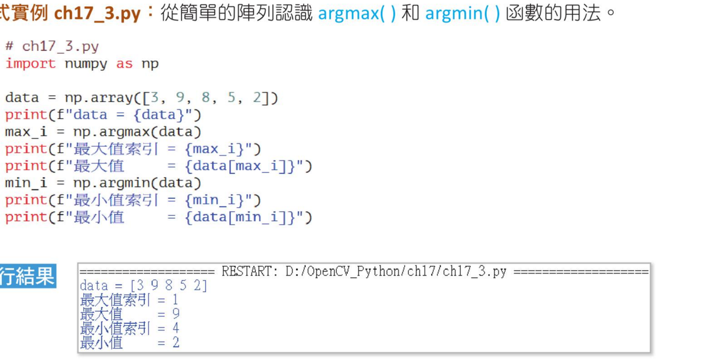
参考原书第 17-4 页，显示一维阵列的索引、最大值与最小值输出。
17-2-3 找出轮廓极点坐标
延续前一小节的范例，可以使用下列索引找出轮廓的极大值与极小值：轮廓 x 极大值、x 极小值、y 极大值与 y 极小值所对应的轮廓点坐标。
轮廓 x 极大值相对应轮廓最右点的坐标：cnt[cnt[:, :, 0].argmax()][0]
轮廓 x 极小值相对应轮廓最左点的坐标：cnt[cnt[:, :, 0].argmin()][0]
轮廓 y 极大值相对应轮廓最下点的坐标：cnt[cnt[:, :, 1].argmax()][0]
轮廓 y 极小值相对应轮廓最上点的坐标：cnt[cnt[:, :, 1].argmin()][0]
程序实例 ch17_7.py：使用黄色点标出轮廓最上点和最下点，绿色点标出最左点和最右点。
# ch17_7.py
import cv2
src = cv2.imread("explode1.jpg")
cv2.imshow("src", src)
src_gray = cv2.cvtColor(src, cv2.COLOR_BGR2GRAY)
ret, dst_binary = cv2.threshold(src_gray, 127, 255, cv2.THRESH_BINARY)
contours, hierarchy = cv2.findContours(
dst_binary,
cv2.RETR_LIST,
cv2.CHAIN_APPROX_SIMPLE
)
cnt = contours[0]
left = tuple(cnt[cnt[:, :, 0].argmin()][0])
right = tuple(cnt[cnt[:, :, 0].argmax()][0])
top = tuple(cnt[cnt[:, :, 1].argmin()][0])
bottom = tuple(cnt[cnt[:, :, 1].argmax()][0])
print(f"最左点 = {left}")
print(f"最右点 = {right}")
print(f"最上点 = {top}")
print(f"最下点 = {bottom}")
dst = cv2.circle(src, left, 5, (0, 255, 0), -1)
dst = cv2.circle(src, right, 5, (0, 255, 0), -1)
dst = cv2.circle(src, top, 5, (0, 255, 255), -1)
dst = cv2.circle(src, bottom, 5, (0, 255, 255), -1)
cv2.imshow("dst", dst)
cv2.waitKey(0)
cv2.destroyAllWindows()
最左点 = (66, 75)
最右点 = (243, 99)
最上点 = (186, 39)
最下点 = (150, 128)
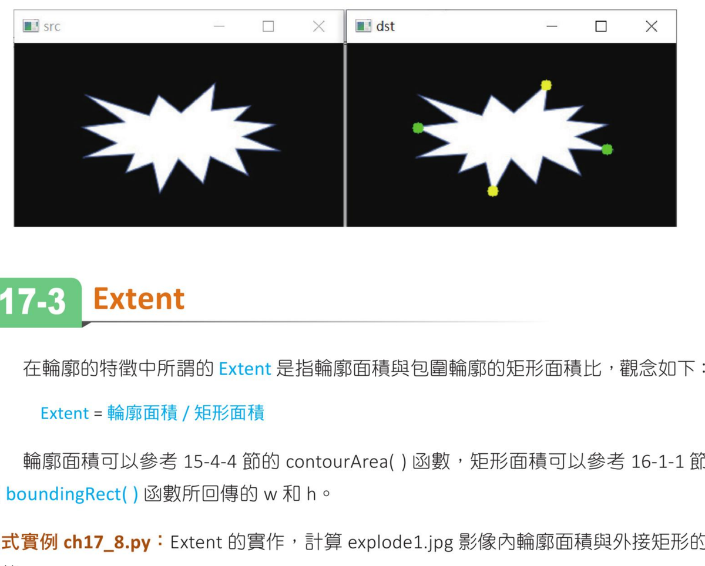
参考原书第 17-7 页，黄色点表示上下极点，绿色点表示左右极点。
17-3
Extent
在轮廓的特征中所说的 Extent，是指轮廓面积与包围轮廓的矩形面积比。
Extent = 轮廓面积 / 矩形面积
程序实例 ch17_8.py：计算 explode1.jpg 影像内轮廓面积与外接矩形的比值。
# ch17_8.py
import cv2
src = cv2.imread("explode1.jpg")
cv2.imshow("src", src)
src_gray = cv2.cvtColor(src, cv2.COLOR_BGR2GRAY)
ret, dst_binary = cv2.threshold(src_gray, 127, 255, cv2.THRESH_BINARY)
contours, hierarchy = cv2.findContours(
dst_binary,
cv2.RETR_LIST,
cv2.CHAIN_APPROX_SIMPLE
)
cnt = contours[0]
dst = cv2.drawContours(src, contours, -1, (0, 255, 0), 5)
con_area = cv2.contourArea(contours[0])
x, y, w, h = cv2.boundingRect(contours[0])
dst = cv2.rectangle(src, (x, y), (x + w, y + h), (0, 255, 255), 3)
cv2.imshow("dst", dst)
square_area = w * h
extent = con_area / square_area
print(f"Extent = {extent}")
cv2.waitKey(0)
cv2.destroyAllWindows()
Extent = 0.4125561979752309
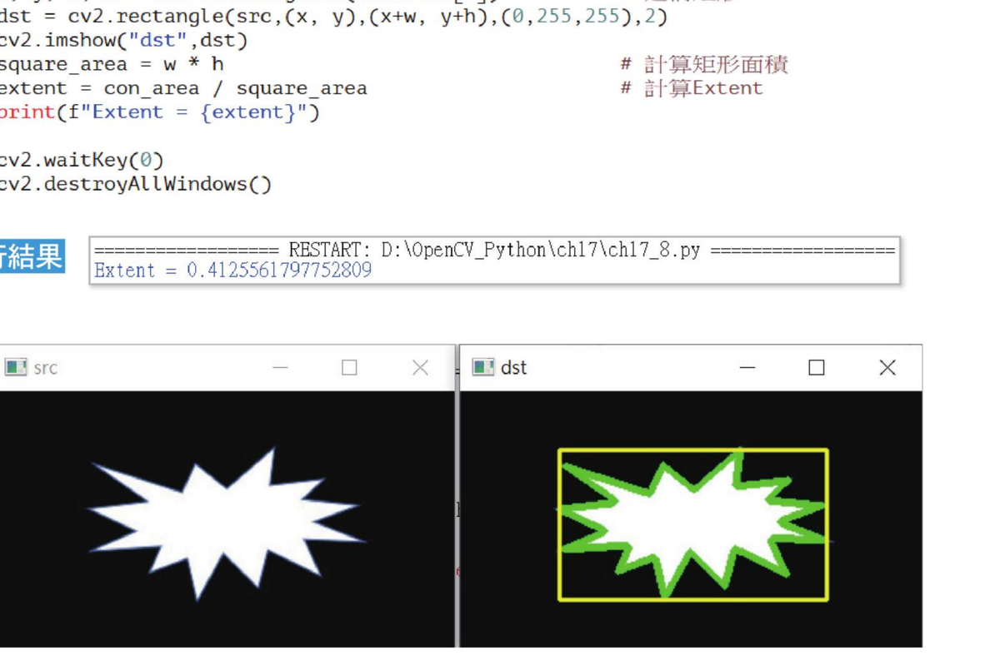
参考原书第 17-8 页，绿色是轮廓，黄色是外接矩形。
17-4
Solidity
在轮廓的特征中所说的 Solidity，是指轮廓面积与包围轮廓的凸包面积比。
Solidity = 轮廓面积 / 凸包面积
程序实例 ch17_9.py：计算 explode1.jpg 影像内轮廓面积与外接凸包形的比值。
# ch17_9.py
import cv2
src = cv2.imread("explode1.jpg")
cv2.imshow("src", src)
src_gray = cv2.cvtColor(src, cv2.COLOR_BGR2GRAY)
ret, dst_binary = cv2.threshold(src_gray, 127, 255, cv2.THRESH_BINARY)
contours, hierarchy = cv2.findContours(
dst_binary,
cv2.RETR_LIST,
cv2.CHAIN_APPROX_SIMPLE
)
dst = cv2.drawContours(src, contours, -1, (0, 255, 0), 3)
con_area = cv2.contourArea(contours[0])
hull = cv2.convexHull(contours[0])
dst = cv2.polylines(src, [hull], True, (0, 255, 255), 2)
cv2.imshow("dst", dst)
convex_area = cv2.contourArea(hull)
solidity = con_area / convex_area
print(f"Solidity = {solidity}")
cv2.waitKey(0)
cv2.destroyAllWindows()
Solidity = 0.5604014041514042
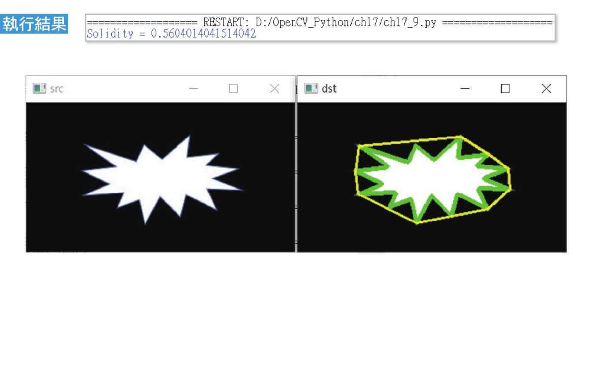
参考原书第 17-9 页，黄色线条为凸包边界。
17-5
等效直径（Equivalent Diameter）
所谓等效直径是指与轮廓面积相等圆形的直径，公式如下。
equivalent_diameter = sqrt(4 * contour_area / pi)
程序实例 ch17_10.py：绘制与轮廓面积相等的圆，同时列出等效直径。
# ch17_10.py
import cv2
import numpy as np
src = cv2.imread("star1.jpg")
cv2.imshow("src", src)
src_gray = cv2.cvtColor(src, cv2.COLOR_BGR2GRAY)
ret, dst_binary = cv2.threshold(src_gray, 127, 255, cv2.THRESH_BINARY)
contours, hierarchy = cv2.findContours(
dst_binary,
cv2.RETR_LIST,
cv2.CHAIN_APPROX_SIMPLE
)
dst = cv2.drawContours(src, contours, -1, (0, 255, 0), 3)
con_area = cv2.contourArea(contours[0])
ed = np.sqrt(4 * con_area / np.pi)
print(f"等效直径 = {ed}")
dst = cv2.circle(src, (260, 110), int(ed / 2), (0, 255, 0), 3)
cv2.imshow("dst", dst)
cv2.waitKey(0)
cv2.destroyAllWindows()
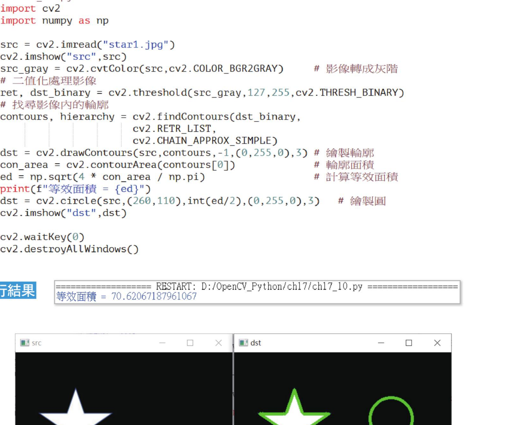
参考原书第 17-10 页，右侧圆形与左侧轮廓具有相同面积。
17-6
遮罩和非 0 像素点的坐标讯息
经过前面的遮罩概念后，可以取得影像中轮廓的资讯，也可以取得轮廓影像像素点的坐标。在使用 drawContours() 函数时，如果将 thickness 设为 -1，可以获得实心轮廓，这个实心轮廓常作为后续处理时的遮罩。
17-6-1 使用 Numpy 的阵列模组取得非 0 像素点坐标讯息
loc_img = np.nonzero(img)
points = np.transpose(np.nonzero(img))
程序实例 ch17_11.py：产生 3 x 5 矩阵，然后列出非 0 元素坐标。
# ch17_11.py
import cv2
import numpy as np
height = 3
width = 5
img = np.random.randint(2, size=(height, width))
print("列印内容 = \n", img)
loc_img = np.nonzero(img)
print(f"非0元素的坐标 = \n{loc_img}")
程序实例 ch17_12.py：增加转置函数 transpose()，重新设计 ch17_11.py。
# ch17_12.py
import numpy as np
height = 3
width = 5
img = np.random.randint(2, size=(height, width))
print("列印内容 = \n", img)
nonzero_img = np.nonzero(img)
print("非0元素的坐标 = \n", nonzero_img)
loc_img = np.transpose(nonzero_img)
print(f"非0元素的坐标 = \n{loc_img}")
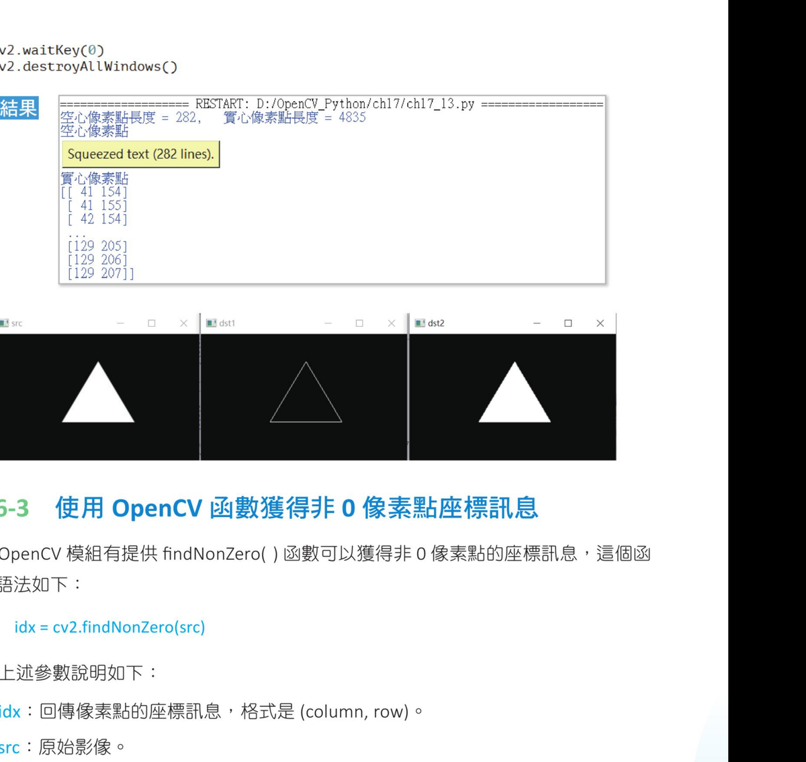
参考原书第 17-11 页至第 17-12 页，显示 nonzero() 与 transpose() 的输出差异。
17-6-2 获得空心与实心非 0 像素点坐标讯息
使用 drawContours() 函数时，如果 thickness 设定为 -1，轮廓就会成为实心轮廓；若为正数，则绘制的是轮廓线条。下列程序将建立空心与实心轮廓并列出非 0 像素点。
程序实例 ch17_13.py：绘制空心与实心轮廓，同时列出坐标资讯。
# ch17_13.py
import cv2
import numpy as np
src = cv2.imread("simple.jpg")
cv2.imshow("src", src)
src_gray = cv2.cvtColor(src, cv2.COLOR_BGR2GRAY)
ret, dst_binary = cv2.threshold(src_gray, 127, 255, cv2.THRESH_BINARY)
contours, hierarchy = cv2.findContours(
dst_binary,
cv2.RETR_LIST,
cv2.CHAIN_APPROX_SIMPLE
)
cnt = contours[0]
mask1 = np.zeros(src_gray.shape, np.uint8)
dst1 = cv2.drawContours(mask1, [cnt], 0, 255, 1)
points1 = np.transpose(np.nonzero(dst1))
mask2 = np.zeros(src_gray.shape, np.uint8)
dst2 = cv2.drawContours(mask2, [cnt], 0, 255, -1)
points2 = np.transpose(np.nonzero(dst2))
print(f"空心像素点长度 = {len(points1)}")
print("空心像素点")
print(points1)
print(f"实心像素点长度 = {len(points2)}")
print("实心像素点")
print(points2)
cv2.imshow("dst1", dst1)
cv2.imshow("dst2", dst2)
cv2.waitKey(0)
cv2.destroyAllWindows()
17-6-3 使用 OpenCV 函数获得非 0 像素点坐标讯息
OpenCV 模组有提供 findNonZero() 函数，可以获得非 0 像素点的坐标讯息。这个函数的语法如下：
idx = cv2.findNonZero(src)
| 参数 / 返回值 | 说明 |
|---|
idx | 回传像素点的坐标讯息，格式是 (column, row)。 |
src | 原始影像。 |
程序实例 ch17_14.py：从简单矩阵影像取得非 0 像素点坐标。
# ch17_14.py
import cv2
import numpy as np
height = 3
width = 5
img = np.random.randint(2, size=(height, width))
print("列印内容 = \n", img)
loc_img = cv2.findNonZero(img)
print(f"非0元素的坐标 = \n{loc_img}")
程序实例 ch17_15.py：使用 findNonZero() 重新设计 ch17_13.py。
# ch17_15.py
import cv2
import numpy as np
src = cv2.imread("simple.jpg")
cv2.imshow("src", src)
src_gray = cv2.cvtColor(src, cv2.COLOR_BGR2GRAY)
ret, dst_binary = cv2.threshold(src_gray, 127, 255, cv2.THRESH_BINARY)
contours, hierarchy = cv2.findContours(
dst_binary,
cv2.RETR_LIST,
cv2.CHAIN_APPROX_SIMPLE
)
cnt = contours[0]
mask1 = np.zeros(src_gray.shape, np.uint8)
dst1 = cv2.drawContours(mask1, [cnt], 0, 255, 1)
points1 = cv2.findNonZero(dst1)
mask2 = np.zeros(src_gray.shape, np.uint8)
dst2 = cv2.drawContours(mask2, [cnt], 0, 255, -1)
points2 = cv2.findNonZero(dst2)
print(f"空心像素点长度 = {len(points1)}")
print("空心像素点")
print(points1)
print(f"实心像素点长度 = {len(points2)}")
print("实心像素点")
print(points2)
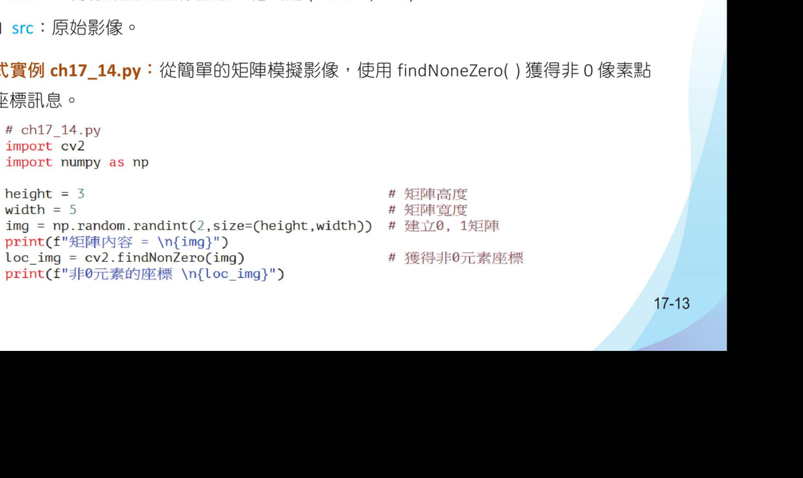
参考原书第 17-13 页，显示 OpenCV findNonZero() 的输出格式。
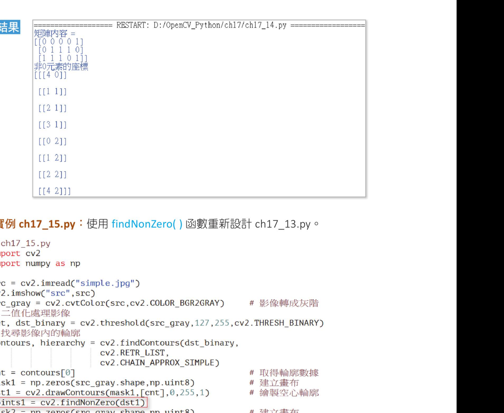
参考原书第 17-14 页，显示空心与实心轮廓的非 0 像素点数量。
17-7
找寻影像物件最小值与最大值与他们的坐标
轮廓特征中有一个很重要的观念，是找寻轮廓内部影像的最小值、最大值，以及它们的座标。OpenCV 提供 minMaxLoc() 函数处理这项问题。
minVal, maxVal, minLoc, maxLoc = cv2.minMaxLoc(src, mask=mask)
| 参数 / 返回值 | 说明 |
|---|
minVal | 最小值。 |
maxVal | 最大值。 |
minLoc | 最小值坐标，格式是 (column, row)。 |
maxLoc | 最大值坐标，格式是 (column, row)。 |
image | 单通道的影像。 |
mask | 可选参数。设定遮罩后，可以找寻此遮罩内的最大值、最小值与坐标。 |
17-7-1 从阵列找最大值与最小值和他们的坐标
先将矩阵想成缩小版影像，从简单数值开始比较容易理解。
程序实例 ch17_16.py：使用 0 到 255 多随机数建立一个 3 x 5 矩阵，然后列出最大值、最小值元素与其坐标。
# ch17_16.py
import cv2
import numpy as np
height = 3
width = 5
img = np.random.randint(256, size=(height, width))
print("列印内容 = \n", img)
minVal, maxVal, minLoc, maxLoc = cv2.minMaxLoc(img)
print(f"最小值 = {minVal}, 位置 = {minLoc}")
print(f"最大值 = {maxVal}, 位置 = {maxLoc}")
17-7-2 影像实作与医学应用说明
原书以 hand1.jpg 手部影像为例，手掌上有黑点与白点。程序会使用遮罩找出手部影像内的最小灰阶值、最大灰阶值，以及它们的位置。
程序实例 ch17_17.py：使用 hand.jpg 侦测手部影像最大与最小像素值，同时列出坐标。
# ch17_17.py
import cv2
import numpy as np
src = cv2.imread("hand.jpg")
cv2.imshow("src", src)
src_gray = cv2.cvtColor(src, cv2.COLOR_BGR2GRAY)
ret, binary = cv2.threshold(src_gray, 50, 255, cv2.THRESH_BINARY)
contours, hierarchy = cv2.findContours(
binary,
cv2.RETR_EXTERNAL,
cv2.CHAIN_APPROX_SIMPLE
)
cnt = contours[0]
mask = np.zeros(src_gray.shape, np.uint8)
mask = cv2.drawContours(mask, [cnt], -1, (255, 255, 255), -1)
src2 = cv2.bitwise_and(src, src, mask=mask)
minVal, maxVal, minLoc, maxLoc = cv2.minMaxLoc(src_gray, mask=mask)
print(f"最小像素值 = {minVal}")
print(f"最小像素位置 = {minLoc}")
print(f"最大像素值 = {maxVal}")
print(f"最大像素位置 = {maxLoc}")
cv2.circle(src, minLoc, 20, (0, 255, 0), 3)
cv2.circle(src, maxLoc, 20, (0, 0, 255), 3)
cv2.imshow("mask", mask)
cv2.imshow("src2", src2)
cv2.waitKey(0)
cv2.destroyAllWindows()
最小像素值 = 15.0
最小像素位置 = (178, 242)
最大像素值 = 255.0
最大像素位置 = (275, 290)
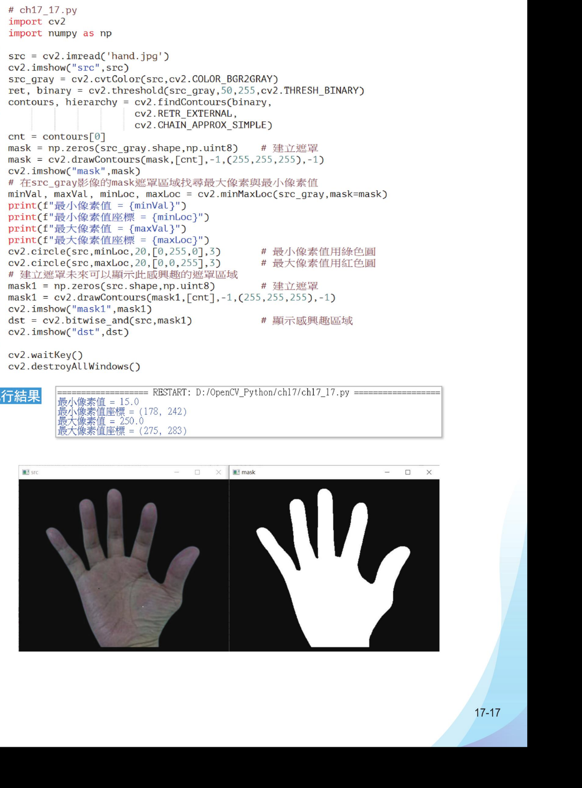
参考原书第 17-17 页，显示手部影像、遮罩、最小值与最大值标记。
17-8
计算影像的像素的均值与标准差
17-8-1 计算影像的像素均值
OpenCV 有提供 mean() 函数，可以计算影像像素的均值。
meanVal = cv2.mean(img, mask=mask)
| 参数 / 返回值 | 说明 |
|---|
meanVal | 回传影像各通道（BGR channel）的均值和 Alpha 透明度。 |
img | 输入影像。 |
mask | 可选参数，可以计算遮罩影像的均值。 |
17-8-2 影像的像素均值简单实例
程序实例 ch17_18.py：计算一幅影像 forest.png 的像素均值。
# ch17_18.py
import cv2
src = cv2.imread("forest.png")
cv2.imshow("src", src)
channels = cv2.mean(src)
print(channels)
cv2.waitKey(0)
cv2.destroyAllWindows()
(115.71672000482117, 146.2766417733353, 193.187279061606, 0.0)
17-8-3 使用遮罩观念计算像素均值
程序实例 ch17_19.py：使用 hand.jpg 重新设计 ch17_18.py，观察执行结果。
# ch17_19.py
import cv2
import numpy as np
src = cv2.imread("hand.jpg")
cv2.imshow("src", src)
src_gray = cv2.cvtColor(src, cv2.COLOR_BGR2GRAY)
ret, binary = cv2.threshold(src_gray, 50, 255, cv2.THRESH_BINARY)
contours, hierarchy = cv2.findContours(
binary,
cv2.RETR_EXTERNAL,
cv2.CHAIN_APPROX_SIMPLE
)
cnt = contours[0]
mask = np.zeros(src_gray.shape, np.uint8)
mask = cv2.drawContours(mask, [cnt], -1, (255, 255, 255), -1)
channels = cv2.mean(src, mask=mask)
print(channels)
cv2.waitKey(0)
cv2.destroyAllWindows()
程序实例 ch17_20.py：重新设计 ch17_19.py，计算手部的颜色均值。
# ch17_20.py
import cv2
import numpy as np
src = cv2.imread("hand.jpg")
cv2.imshow("src", src)
src_gray = cv2.cvtColor(src, cv2.COLOR_BGR2GRAY)
ret, binary = cv2.threshold(src_gray, 50, 255, cv2.THRESH_BINARY)
contours, hierarchy = cv2.findContours(
binary,
cv2.RETR_EXTERNAL,
cv2.CHAIN_APPROX_SIMPLE
)
cnt = contours[0]
mask = np.zeros(src_gray.shape, np.uint8)
mask = cv2.drawContours(mask, [cnt], -1, (255, 255, 255), -1)
channels = cv2.mean(src, mask=mask)
print(channels)
cv2.waitKey(0)
cv2.destroyAllWindows()
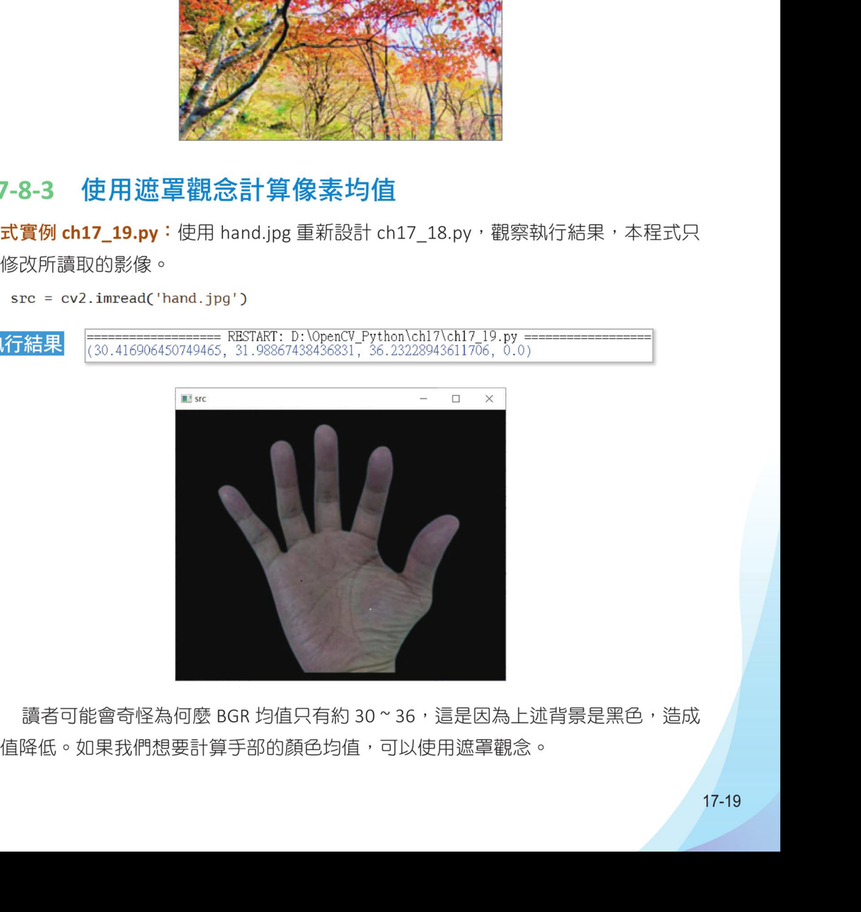
参考原书第 17-19 页，显示森林影像、手部遮罩与均值输出。
17-8-4 计算影像的像素标准差
OpenCV 有提供 meanStdDev() 函数，可以计算影像像素的均值和标准差。
mean, std = cv2.meanStdDev(img, mask=mask)
| 参数 / 返回值 | 说明 |
|---|
mean | 回传影像各通道（BGR channel）的均值。 |
std | 回传影像各通道（BGR channel）的标准差。 |
img | 输入影像。 |
mask | 可选参数，可以计算遮罩影像的均值和标准差。 |
程序实例 ch17_21.py：计算 forest.png 影像的像素标准差。
# ch17_21.py
import cv2
src = cv2.imread("forest.png")
cv2.imshow("src", src)
mean, std = cv2.meanStdDev(src)
print(f"均值 = \n{mean}")
print(f"标准差 = \n{std}")
cv2.waitKey(0)
cv2.destroyAllWindows()
均值 =
[[115.71672001]
[146.27664177]
[193.18727906]]
标准差 =
[[77.92939784]
[67.79052664]
[53.17257724]]
17-9
方向
在轮廓特征中，有一个观念是方向。在 16-1-4 节曾介绍 fitEllipse() 函数，这个函数可以将影像内的轮廓使用最佳化椭圆形包起来，同时在执行时会回传 retval 元组资料。
(x, y)：椭圆中心点坐标。
(a, b)：长短轴的直径。
angle：代表旋转角度。
1. 列出 hand.jpg 手形的最左、最右、最上、最下点。同时最上点与最下点用黄色，最左点与最右点用绿色。注：需要使用不同的圆点，同时检测最外层轮廓。
2. 计算 cloud.jpg 的宽高比和 Solidity，同时用红色描绘凸包、黄色描绘矩形框。
3. 计算 eagle.jpg 影像轮廓像素值的均值和标准差。
4. 使用 minn.jpg 影像，绘制绿色的影像轮廓，将此影像轮廓当作遮罩，计算此遮罩区域影像像素的均值和标准差。
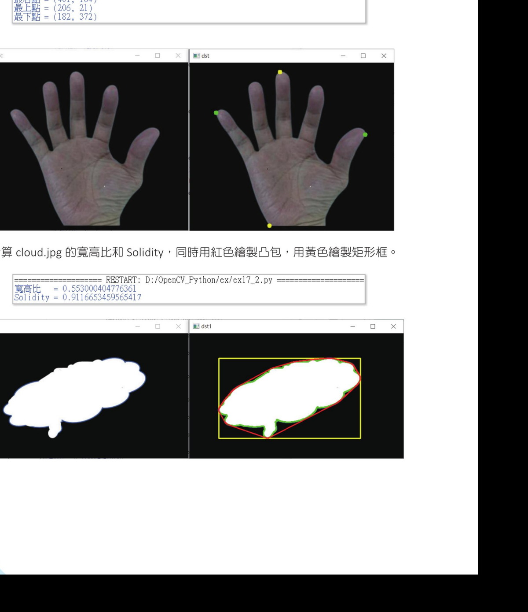
参考原书第 17-22 页，显示手形极点与云朵轮廓参考结果。
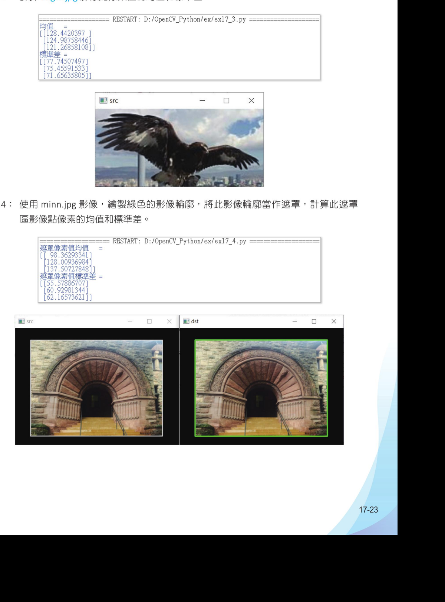
参考原书第 17-23 页，显示 eagle 与 minn 影像练习输出。